קאפיטל 2
די גאנצע אויסערליכע טור
זייטן 23–42 אינעם PDF
דימענסיעס און די סדר ארום דעם קאר
דער בעסטער וועג צו קענען לערנען דעם דרויסנדיקן טייל פון אייער CR-V איז ארומגיין ארום אים אזוי ווי א טעכניקער טוט ביים איבערגעבן דעם קאר: פארנט, דרייווער זייט, הינטן, פאסאזשיר זייט, און צום סוף דער דאך. הייבט אן מיט די גרונט נומערן. Honda'ס אפיציעלע ספעציפיקאציעס געבן די לענג 184.8 אינטשעס און די ברייט 73.5 אינטשעס. די הייך איז 66.2 אינטשעס מיט פראנט-ראד דרייוו און 66.5 אינטשעס מיט אלע-ראד דרייוו. דער wheelbase (דער אפשטאנד צווישן די פארנטיקע און הינטערשטע אקסלען) איז 106.3 אינטשעס. דער אפשטאנד פון דער ערד ווען דער קאר איז ליידיג איז 7.8 אינטשעס ביי פראנט-ראד דרייוו און 8.2 אינטשעס ביי אלע-ראד דרייוו. די נומערן זענען וויכטיג אין ענגע שטאטישע פארקינג גאראזשן, ביי קוירבס, און אויף דרייוועי שיפועים.
CR-V EX דרויסנדיקע מאסן (Honda ספעציפיקאציעס)
| מאס | FWD (2WD) | AWD |
|---|---|---|
| לענג | 184.8 in | 184.8 in |
| ברייט | 73.5 in | 73.5 in |
| הייך | 66.2 in | 66.5 in |
| Wheelbase (אפשטאנד צווישן די אקסלען) | 106.3 in | 106.3 in |
| Track (ברייט צווישן די רעדער), פארנט /הינטן | 63.4 / 64.1 in | 63.3 / 63.9 in |
| אפשטאנד פון דער ערד (ליידיג) | 7.8 in | 8.2 in |
| ווינקל פארנט /הינטן | 17.1 / 21.3 deg | 17.7 / 22.1 deg |
| דריי-דורכמעסער, קוירב צו קוירב | 37.3 ft | 37.3 ft |
די ווינקלען פארנט און הינטן זאגן אייך ווי שטאצָיג א ראמפ אדער א דרייוועי קאנט קען זיין איידער דער פארנטיקער אדער הינטערשטער באמפער קראצט זיך אן. דער דריי-דורכמעסער פון 37.3 פיס איז די ברייט פון וועג וואס דער קאר דארף פאר א פולן U-turn פון קוירב צו קוירב.
דרויסנדיקע קאלירן און פארב קאודס
לויט Honda'ס ספעציפיקאציעס קומט דער EX אין זעקס דרויסנדיקע קאלירן. די סטאנדארט קאלירן זענען Solar Silver Metallic, Crystal Black Pearl און Meteorite Gray Metallic. די פרימיום קאלירן זענען Platinum White Pearl, Urban Gray Pearl און Radiant Red Metallic. יעדער קאליר קומט מיט א שווארצן אדער גרויען שטאף אינעווייניג, ווי די טאבעלע ווייזט.
EX דרויסנדיקע קאלירן, פארב קאודס און אינעווייניגע שטאף קאלירן
| דרויסנדיקער קאליר | פארב קאוד | סארט | אינעווייניג |
|---|---|---|---|
| Solar Silver Metallic | NH-932M | סטאנדארט | שווארץ |
דער פארנט פונעם קאר
גריל און די אויטאמאטישע שאטערס
Honda'ס פיטשער גייד באשרייבט אן auto-shutter grille system (אויטאמאטישע לאדָן הינטער'ן גריל) הינטער דעם גריל. ווען דער מאטאר דארף ווייניג קילונג, מאכן זיך די שאטערס צו כדי די לופט זאל גלאט פליסן ארום דעם קאר. דאס פארמינערט דעם ווינט-ווידערשטאנד און העלפט שפארן בענזין. ווען די סיסטעמען אונטער דער האוד דארפן מער קילע לופט, עפענען זיך די שאטערס אויטאמאטיש. איר דארפט גארנישט טון. אויב איר קוקט דורך דעם גריל און זעט די שאטערס צוגעמאכט, איז דאס נארמאל. דער גריל און דער אונטערשטער פארנטיקער טייל געבן דעם CR-V אויך זיין שטארקן פארנטיקן אויסזען, וואס Honda באשרייבט סיי ווי שטארק און סיי ווי איידל.

דער ראדאר סענסאר הינטער'ן עמבלעם
אסאך אייגנטימער ווייסן דאס קיינמאל נישט: לויט דעם אונער'ס מאנואל זיצט דער ראדאר סענסאר הינטער'ן Honda עמבלעם אויף דעם פארנטיקן גריל. דער ראדאר מעסט דעם אפשטאנד און די גיכקייט פון די קארס פאר אייך. סיסטעמען ווי Adaptive Cruise Control און Collision Mitigation Braking System זענען אנגעוויזן אויף אים. דער עמבלעם איז נישט נאר א באצירונג. ער איז א פענצטער פאר'ן ראדאר, דערפאר מוז ער בלייבן ריין און גאנץ. ווי די סיסטעמען פירן זיך אויפ'ן וועג ווערט ערקלערט אין קאפיטל 9.
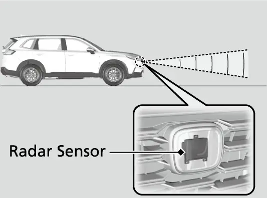
דער מאנואל גיט קלארע כללים פאר'ן עמבלעם און גריל, כדי דער ראדאר זאל ווייטער ארבעטן ווי געהעריג:
- האלט שטענדיג דעם עמבלעם און דעם פארנטיקן גריל ריין.
- רייניגט זיי נאר מיט וואסער אדער א מילדן דעטערדזשענט, קיינמאל נישט מיט כעמישע סאלווענטן אדער פאלירן-פולווער.
- קלעבט נישט קיין סטיקערס און מאלט נישט אויפ'ן עמבלעם אדער גריל.
- קראצט נישט אן און קאליעט נישט דעם עמבלעם אדער גריל.
- טוישט נישט אליין דעם עמבלעם, דעם פארנטיקן גריל אדער דעם באמפער.
- נעמט קיינמאל נישט ארויס און צולייגט נישט דעם ראדאר סענסאר.
קיין פארנטיקע אדער הינטערשטע פארקינג סענסארס אויפ'ן EX
דער אונער'ס מאנואל האט א טייל וועגן sonar sensors (סאנאר סענסארס) אין די פארנטיקע און הינטערשטע באמפערס, באצייכנט אז זיי זענען נישט אויף אלע מאדעלן. Honda'ס ספעציפיקאציע טאבעלע ווייזט פארקינג סענסארס, 4 פארנט און 4 הינטן, אויפ'ן EX-L (און אויף די Sport-L און Sport Touring היברידס), אבער נישט אויפ'ן EX. די קיילעכדיגע פינטלעך וואס איר זעט אפשר אין די באמפערס פון אנדערע CR-Vs זענען נישטא אויף אייערן, און דער קאר וועט נישט ביפן פאר א וואנט פאר אייך. אייער פארקינג הילף קומט פון דער הינטערשטער קאמערע און פון אייערע אייגענע אויגן. פארקן אין פאמעלעכער גיכקייט ווערט ערקלערט אין קאפיטל 15.
ווינדשילד: קאמערע, ליכט-סענסאר און ווייפערס
פארנטיקע סענסאר קאמערע
קוקט ארויף אין דער אויבערשטער מיטן פון דער ווינדשילד. לויט דעם מאנואל זיצט די פארנטיקע סענסאר קאמערע הינטער דעם רעאר-וויו שפיגל. זי ארבעט צוזאמען מיט'ן ראדאר און דינט די Collision Mitigation Braking System, Road Departure Mitigation, Adaptive Cruise Control with Low Speed Follow, די Lane Keeping Assist System, Traffic Jam Assist, Traffci Sign Recognition און Auto High-Beam.
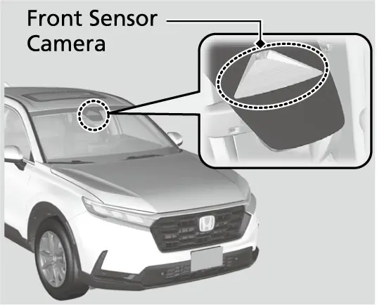
קלעבט קיינמאל נישט קיין פילם און לייגט נישט צו קיין זאך צו דער ווינדשילד, האוד אדער גריל וואו עס קען פארשטעלן וואס די קאמערע זעט. לאזט אויך נישט ליגן קיין זאכן אויבן אויפ'ן דעשבארד: זייער אפשפיגלונג אין גלאז קען שטערן די קאמערע צו דערקענען די ליין ליניעס.
קראצן, שניטן אדער שפליטערלעך אין גלאז אינעם געביט וואס די קאמערע זעט קענען מאכן די סיסטעמען ארבעטן נישט נארמאל. אין אזא פאל רעקאמענדירט Honda אן אריגינעלע Honda ווינדשילד. אפילו קליינע פארעכטונגען אין יענעם ארט, אדער אן אנדערע (נישט-Honda) ווינדשילד, קענען אויך מאכן פראבלעמען. נאך יעדן טויש פון דער ווינדשילד מוז א דילער נאכאמאל קאליברירן די קאמערע; ריכטיגע קאליבראציע איז נויטיג אז די סיסטעמען זאלן ארבעטן.
קאמערע מעלדונגען און וואס צו טון
| מעלדונג | וואס צו טון |
|---|---|
| Some driver assist systems cannot operate: Camera temperature too high | קילט אפ דעם קאר מיט דער קליימעט קאנטראל, ניצט defroster מאדָ מיט דער לופט געצילט אויף דער קאמערע אויב נויטיג, און הייבט אן פארן כדי אפצוקילן די ווינדשילד. |
| Some driver assist systems cannot operate: Clean front windshield or poor viewing condition. | פארקט זיכער און רייניגט די ווינדשילד. אויב די מעלדונג בלייבט נאך א שטיק צייט פארן, לאזט א דילער טשעקן דעם קאר. |
ליכט-סענסאר
נעבן דער ווינדשילד איז אויך דא א ליכט-סענסאר, אויפ'ן ארט וואס דער מאנואל'ס צייכענונג ווייזט. ער זאגט דעם קאר ווי ליכטיג עס איז דרויסן, כדי די העדלייטס זאלן זיך אליין אנצינדן און אויסלעשן ווען דער ליכט שאלטער איז אויף AUTO (אויטאמאטיש). דער מאנואל ווארנט נישט צודעקן דעם סענסאר מיט גארנישט, אנדערש קען די אויטאמאטישע באלייכטונג נישט ארבעטן ווי געהעריג. דאס מיינט: קיין פארקינג פערמיטס, פאפירן אדער טעלעפאן האלטערס אויף יענעם טייל פונעם דעשבארד. איינשטעלן די סענסיטיוויטעט פון די אויטאמאטישע לייכטן איז א פונקט אינעם Vehicle Settings (קאר איינשטעלונגען) מעניו, ערקלערט אין קאפיטל 11.
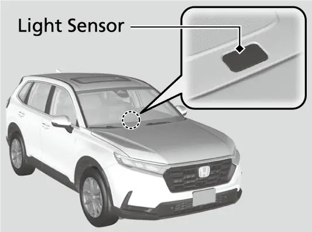
LED העדלייטס
Honda'ס פיטשער גייד זאגט אז אלע CR-V טרימס האבן LED (light-emitting diode) העדלייטס סיי פאר די נידעריגע און סיי פאר די הויכע ליכט. זיי פארשפרייטן בעסער די ליכט און ניצן בלויז בערך האלב אזויפיל עלעקטרישע ענערגיע ווי געווענליכע halogen העדלייטס. דער מאנואל זאגט אז די ריכטונג ווערט איינגעשטעלט אין פאבריק און דארף נישט אויסגעגליכן ווערן. אבער אויב איר פירט אפט שווערע זאכן אינעם לאסט-פלאץ אדער שלעפט א טרעילער, לאזט א דילער אדער א קוואליפיצירטן טעכניקער נאכאמאל איינשטעלן די ריכטונג. אויב איר האט א חשד אז די העדלייטס זענען נישט ריכטיג געצילט, לאזט א דילער באקוקן דעם קאר. LED העדלייטס זענען נישט קיין פשוט'ער טויש פון א לעמפל: אויב איינס גייט קאליע, באקוקט און טוישט אן אויטאריזירטער Honda דילער דעם גאנצן ליכט-טייל.
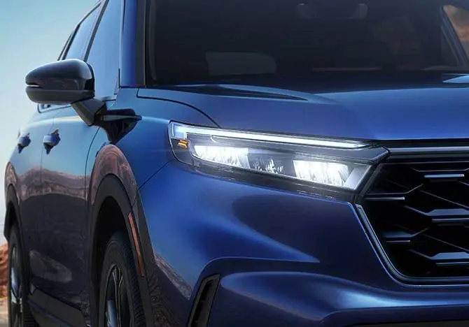
טאג-לייכטן און פארנטיקע לייכטן
ארום די העדלייטס זענען די LED daytime running lights (טאג-לייכטן), וואס העלפן אנדערע אייך זען בייטאג. דער מאנואל רעכנט אויס די באדינגונגען אז זיי זאלן זיך אנצינדן:
- דער power mode (קראפט מאדָ) איז אויף ON.
- דער העדלייט שאלטער איז אויף AUTO אדער אויף דער פארקינג-ליכט פאזיציע.
- דער פארקינג ברעמז איז אפגעלאזט.
ווען זיי זענען שוין אן, בלייבן זיי אן אפילו אויב איר שטעלט נאכאמאל דעם פארקינג ברעמז, און זיי לעשן זיך אויס ווען איר שטעלט דעם power mode אויף VEHICLE OFF. זיי לעשן זיך אויך אויס ווען די העדלייטס צינדן זיך אן, צי ווייל איר צינדט אן די העדלייטס, צי ווייל עס ווערט פינצטער מיט'ן שאלטער אויף AUTO. די פארנטיקע בלינקערס, פארקינג לייכטן און פארנטיקע זייט-מארקער לייכטן זענען אויך אלע LED, און אלע ווערן געטוישט ביים דילער.


ווינדשילד ווייפערס
די ווינדשילד ווייפערס ליגן אונטן ביי דער ווינדשילד. Honda רעכנט אויס א Smart Clear Wiper אויפ'ן EX, אבער די מאנואל זייטן וואס זענען דא ערקלערן נישט וואס איז דער אונטערשייד פון א געווענליכן ווייפער, דערפאר באשרייבט דער גייד עס נישט. די פארנטיקע ווייפערס און וואשערס ארבעטן נאר ווען דער power mode איז אויף ON. די פאזיציעס פונעם הענטל זענען MIST (שנעל ביז איר לאזט אפ דאס הענטל), OFF, INT, LO און HI. ציען דאס הענטל צו זיך שפריצט וואשער-פליסיגקייט; ווען איר לאזט עס אפ פאר מער ווי איין סעקונדע, הערט אויף דאס שפריצן און די ווייפערס ווישן נאך צוויי אדער דריי מאל איידער זיי שטעלן זיך אפ.
וואס דער מאנואל זאגט וועגן היטן די ווייפערס:
- לאזט קיינמאל נישט ארבעטן די ווייפערס אויף א טרוקענער ווינדשילד; עס קראצט דאס גלאז און קאליעט די גומענע בלעטער.
- לעשט אויס דעם וואשער אויב עס קומט נישט ארויס קיין פליסיגקייט, אנדערש קען די פאמפ קאליע ווערן.
- אין קאלטן וועטער קענען די בלעטער אנפרירן צום גלאז, דערפאר ווארעמט ערשט אן די ווינדשילד מיט'ן defogger.
- דער ווייפער מאטאר קען זיך אפשטעלן אויף א קורצע צייט כדי נישט איבערצולאדן; ער קומט צוריק צו נארמאל אין א פאר מינוט.
אויב שניי אדער אן אנדערע זאך שטעלט אפ די ווייפערס
- פארקט דעם קאר אויף א זיכערן ארט.
- דרייט דעם ווייפער שאלטער אויף OFF.
- שטעלט דעם power mode אויף ACCESSORY אדער VEHICLE OFF.
- נעמט אראפ דעם שניי אדער די זאך.
דרייווער זייט
פון דער דרייווער זייט זעט איר דעם CR-V'ס פראפיל. Honda באשרייבט דעם אויבערשטן טייל פונעם קערפער ווי גלאט פאר גוטע אעראדינאמיק און דעם אונטערשטן טייל ווי שטארק. באמערקט די טונקלערע גלאז אויף די הינטערשטע פענצטער. דאס איז privacy glass (פריוואטקייט גלאז), סטאנדארט אויפ'ן EX, וואס פארמינערט בלענדונג און מאכט אייערע זאכן ווייניגער זעבאר פאר מענטשן אינדרויסן. די פענצטער פונעם דרייווער און פארנטיקן פאסאזשיר אויפ'ן EX האבן auto up and down (אויטאמאטיש ארויף און אראפ), אזוי אז איין פעסטער דרוק אדער ציען פירט זיי אינגאנצן. די פענצטער שאלטערס ווערן ערקלערט אין קאפיטל 5.
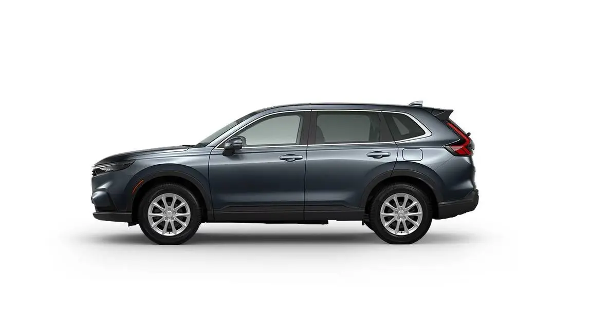
זייט שפיגלען
Honda'ס פיטשער גייד זאגט אז די EX שפיגלען זענען אין דעם קאר'ס קאליר, עלעקטריש איינשטעלבאר און געהייצט פאר פארן אין יעדן וועטער. זיי האבן אן איינגעבויטן LED בלינקער און זענען געפורעמט צו פארמינערן ווינט-ראש. מען קען זיי צולייגן מיט דער האנט, וואס העלפט אויף ענגע גאסן; זיי לייגן זיך נישט צו עלעקטריש. די בלינקער לייכטן אין די שפיגלען זענען LED און ווערן געטוישט אינגאנצן ביים דילער.
איינשטעלן די טיר שפיגלען
- שטעלט דעם power mode אויף ON.
- קלייבט אויס דעם לינקן אדער רעכטן שפיגל מיט'ן L/R שאלטער.
- דריקט דעם איינשטעל-שאלטער לינקס, רעכטס, ארויף אדער אראפ צו רוקן דעם שפיגל.
- שטעלט צוריק דעם L/R שאלטער אין מיטן, כדי איר זאלט נישט צופעליג רוקן א שפיגל.
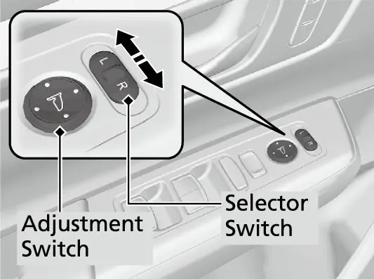
Smart Entry טיר האנטל
דאס פארנטיקע טיר האנטל איז אייער Smart Entry (קלוגער אריינגאנג אן שליסל) פונקט. Honda'ס פיטשער גייד ערקלערט עס פשוט: מיט'ן שליסל פאב אין קעשענע, קומט צו, אנרירט דאס טיר האנטל, און עפנט די טיר. ווען איר גייט אוועק, אנרירט דעם LOCK סענסאר אויפ'ן האנטל צו פארשליסן דעם קאר. ווען Walk Away Auto Lock (אויטאמאטיש פארשליסן ביים אוועקגיין) איז אנגעשטעלט, קען דער קאר זיך אליין פארשליסן ווען איר גייט אוועק. די פולע פרטים וועגן שליסל און פארשליסן, אריינגערעכנט אנצינדן דעם מאטאר פון דער ווייטנס, זענען אין קאפיטל 21. פארלויפיג, ווייסט וואו אייער האנט גייט און וועלכער פלאץ אויפ'ן האנטל איז דער לאק סענסאר.
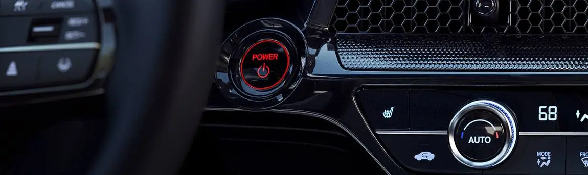
רעדער, טייערס און ברעמזן
לויט Honda'ס ספעציפיקאציעס פארט דער EX אויף 18-אינטש Sparkle Silver אלוי רעדער מיט 235/60R18 103H אלע-סעזאן טייערס. די 235 איז די ברייט פונעם טייער אין מילימעטער, 60 איז די הייך פון דער זייט-וואנט אלס פראצענט פון דער ברייט, און 18 איז דער דורכמעסער פונעם ראד אין אינטשעס. הינטער די שפייכן זענען די ברעמזן: 12.3-אינטש ווענטילירטע דיסקס פארנט און 12.2-אינטש פולע דיסקס הינטן. דער קליינער ספעיר טייער איז א T155/90D17 112M, אפגעהיטן אונטער דער פלאר פונעם לאסט-פלאץ. טייער דרוק, ראטאציע און דער ספעיר ווערן ערקלערט אין קאפיטל 16.
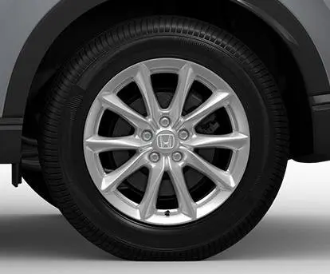
EX רעדער, טייערס און ברעמזן
| זאך | ספעציפיקאציע |
|---|---|
| רעדער | 18-אינטש Sparkle Silver אלוי |
| טייערס | 235/60R18 103H אלע-סעזאן |
| קליינער ספעיר | T155/90D17 112M |
| זאך | ספעציפיקאציע |
|---|---|
| פארנטיקע ברעמזן | 12.3-אינטש ווענטילירטע דיסק |
| הינטערשטע ברעמזן | 12.2-אינטש פולע דיסק |
זיכערהייט לעיבלס
עפנט די טיר פונעם דרייווער און קוקט אויף די קאנטן און די ראם ארום דער עפענונג. דער אונער'ס מאנואל האט א Label Locations (ערטער פון די לעיבלס) זייט מיט א צייכענונג וואס ווייזט וואו Honda שטעלט די זיכערהייט לעיבלס אויף אייער CR-V. דער מאנואל זאגט אז די לעיבלס ווארענען פון מעגליכע סכנות וואס קענען פאראורזאכן ערנסטע שאדן אדער טויט, און בעט אייך זיי גוט דורכצולייענען. אויב א לעיבל פאלט אראפ אדער ווערט שווער צו לייענען, פארבינדט זיך מיט א דילער פאר א נייעם. דער איינציגער אויסנאם איז דער אמעריקאנער דעשבארד לעיבל, וואס איר מעגט אליין אראפנעמען. די טייער דרוק נומערן ווערן ערקלערט אין קאפיטל 16.
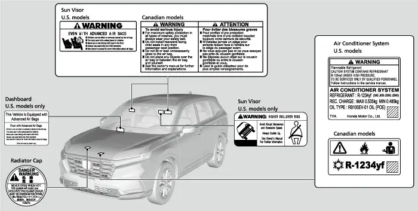
דער הינטערשטער טייל פונעם קאר
אייער EX האט א מאנועלן טעילגעיט. דער עלעקטרישער power tailgate געהערט צום EX-L און צו די TrailSport, Sport-L און Sport Touring היברידס, דערפאר איגנארירט די מאנואל זייטן וועגן power tailgate. Honda'ס פיטשער גייד רופט דעם טעילגעיט לייכט און גרינג צו עפענען, און באמערקט אז ווען ער איז אפן גיט ער אייך א שוץ פון רעגן בשעת'ן אריינלאדן. דער הינטערשטער ווייפער זיצט אויבן אויף דער הינטערשטער שויב. אויף ביידע זייטן זענען די שטייענדיגע טעיללייטס, וואס Honda רופט דעם CR-V'ס סימן-דיזיין, מיט LED ברעמז און טעיל לייכטן.
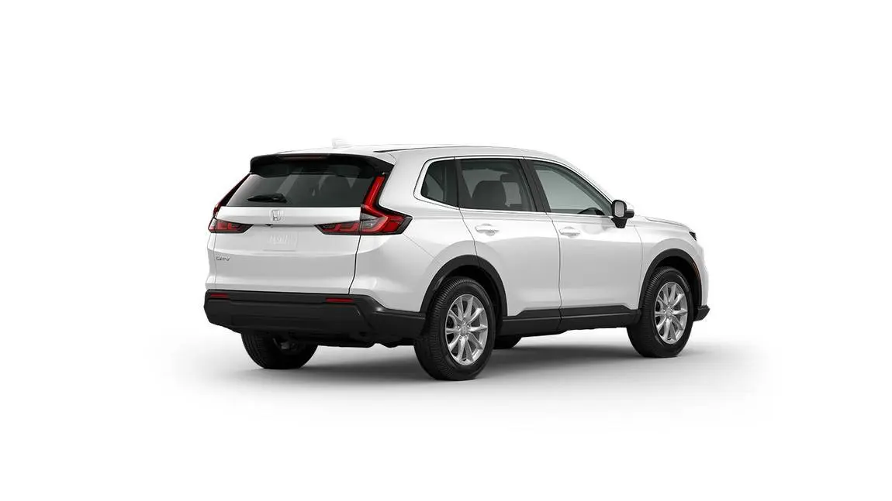
עפענען דעם טעילגעיט
ווען אלע טירן זענען אפגעשלאסן, איז דער טעילגעיט אויך אפגעשלאסן. דרוקט דעם אויסערליכן האנטל און הייבט. Honda'ס פיטשער גייד שטעלט דעם קנעפל אויבן איבער דעם לייסענס פלעיט. ווייל דער EX האט Smart Entry, דארפט איר נישט ערשט אפשליסן: אויב דער שליסל פאב איז ביי אייך, דרוקט און הייבט. אן אנדערער מענטש מיט א פאב אין דער נאנטקייט קען אים אויך עפענען. דער מאנואל באצייכנט א טעילגעיט unlock קנעפל אויפ'ן רימאוט אלס נישט אויף אלע מאדעלן, דערפאר קוקט צי אייער פאב האט אזא קנעפל איידער איר רעכנט דערויף.
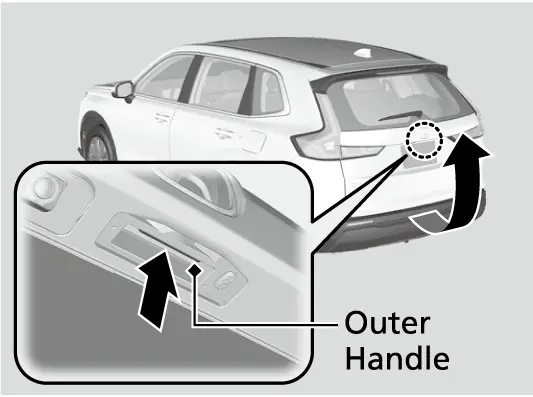
צומאכן דעם טעילגעיט
צו פארמאכן, כאפט דעם אינעווייניגן האנטל, ציט אראפ דעם טעילגעיט, און שטופט אים צו פון אינדרויסן. אויב די דרייווער'ס טיר איז שוין פארשלאסן ווען איר מאכט אים צו, פארשליסט זיך דער טעילגעיט אויטאמאטיש, און א טייל דרויסנדיגע לייכטן בלינקען צו באשטעטיגן. די לייכטן אינעם לאסט-פלאץ צינדן זיך אן ווען דער טעילגעיט איז אפן.
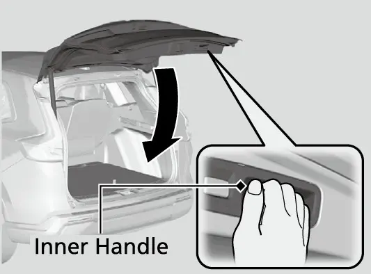
זיכערהייט ביים טעילגעיט
דער מאנואל'ס פארזיכטיגקייטן פאר א מאנועלן טעילגעיט:
- עפנט אים אינגאנצן; אויב ער איז נאר האלב אפן, קען ער אנהייבן זיך צומאכן פון זיין אייגענער וואג.
- זייט פארזיכטיג אין שטארקן ווינט, וואס קען אים צושטופן.
- היט אייער קאפ, און האלט די הענט ארויס פונעם שפאלט צווישן טעילגעיט און לאסט-פלאץ ביים צומאכן.
- האלט פעקלעך און אנדערע זאכן אוועק פון די שטיצע-סטראטס.
- האלט דעם טעילגעיט צו בשעת'ן פארן, כדי עס זאל נישט ווערן קאליע און די אויסגאס-גאז זאל נישט אריינקומען אינעם קאר.
- לאזט קיינמאל נישט קיינעם פארן אינעם לאסט-פלאץ; ער קען ווערן געשעדיגט ביי א שטארקן ברעמז, א פלוצעמדיגער גיכקייט אדער א קראך.
- ווען דער מאטאר לויפט אויפ'ן ארט, שטייט נישט פאר דער אויסגאס רער; זי קען אייך פארברענען.
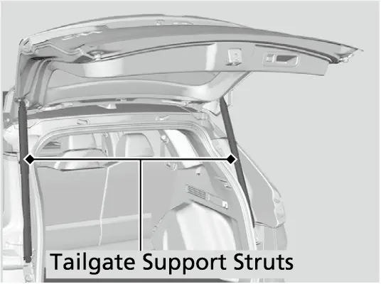
הינטערשטער ווייפער און וואשער
דער הינטערשטער ווייפער איז סטאנדארט און ארבעט מיט'ן power mode אויף ON. שטעלט אים אויף OFF, INT (מיט אפשטעלן) אדער ON לויט דעם רעגן. דרייען דעם שאלטער אויף דער וואשער פאזיציע שפריצט די הינטערשטע שויב בשעת דער ווייפער ארבעט. ווען איר לאזט אפ, הערט אויף דאס שפריצן און דער ווייפער קערט זיך צוריק צו זיין אויסגעקליבענער איינשטעלונג נאך א פאר וויש. Honda באמערקט אז דער הינטערשטער ווייפער איז אויך נוצליך צו רייניגן אנגעזאמלטן שמוץ אדער שטויב.
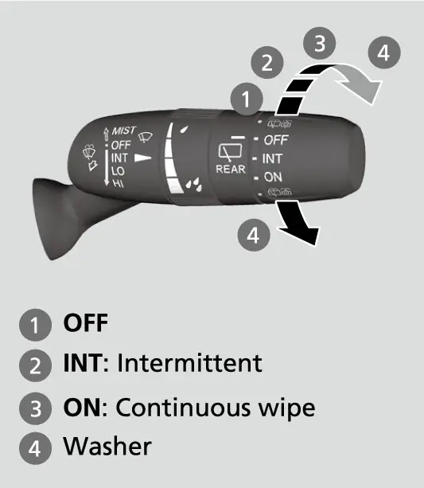
אויב די פארנטיקע ווייפערס ארבעטן און איר שיפט אריין אין R, הייבט דער הינטערשטער ווייפער אן אויטאמאטיש, אפילו אויב זיין אייגענער שאלטער איז אויסגעלאשן:
הינטערשטער ווייפער אין רעווערס
| פארנטיקער ווייפער איינשטעלונג | הינטערשטער ווייפער אין R |
|---|---|
| INT | מיט אפשטעלן |
| LO | אן אויפהער |
| HI | אן אויפהער |
הינטערשטע קאמערע
די לינז פון דער הינטערשטער קאמערע זיצט פונקט איבער'ן לייסענס פלעיט. ווען איר שיפט אריין אין R, וועקסלט זיך דער 9-אינטש סקרין אויטאמאטיש צום הינטערשטן בילד, פאר אלעס וואס ווערט געוויזן. עס זענען דא דריי מאדָעס, Wide (ברייט), Normal (נארמאל) און Top down (פון אויבן), און מען וועקסלט דורך אנרירן די אייקאנס. Fixed Guidelines (פעסטע ליניעס) און Dynamic Guidelines (ליניעס וואס בייגן זיך ווען איר דרייט דעם סטירינג) קען מען יעדע באזונדער אנשטעלן אדער אויסלעשן אין די סעטינגס.
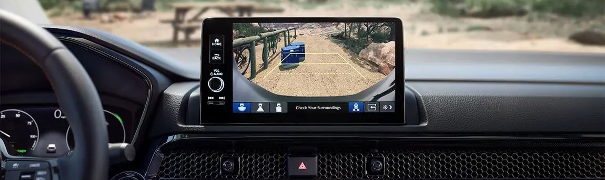
אויב דאס בילד איז נישט קלאר, ווישט אפ די לינז מיט א ווייכע, נאסע שמאטע. דער מאנואל ערקלערט וועלכער בילד קומט צוריק די קומענדיגע מאל:
- אויב איר האט לעצטנס גענוצט Wide אדער Normal, קומט דער זעלבער בילד צוריק די קומענדיגע מאל וואס איר שיפט אין R.
- אויב איר לעשט אויס דעם מאטאר בשעת עס איז אויף Top down, קומט Wide די קומענדיגע מאל וואס איר פארט צוריק.
- אויב עס גייען אדורך מער ווי 10 סעקונדעס נאכן ארויסגיין פון R פון Top down, קומט Wide די קומענדיגע מאל.
- אויב איר קערט זיך צוריק צו R אין 10 סעקונדעס, בלייבט Top down, וואס איז באקוועם ביים הין-און-צוריק פארקן צווישן קארס.
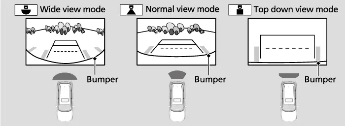
הינטערשטע לייכטן און דאס איינציגע לעמפל וואס איר קענט טוישן
לויט דעם מאנואל זענען די ברעמז לייכטן, טעיל לייכטן, הינטערשטע זייט-מארקער לייכטן, רעווערס לייכטן, לייסענס פלעיט ליכט און דאס הויכע ברעמז ליכט אלע LED, און א דילער טוישט די טיילן. דער אויסנאם איז דער הינטערשטער בלינקער, וואס ניצט א געווענליך לעמפל, פאסיג צו Honda'ס ספעציפיקאציע פון halogen הינטערשטע בלינקערס. דאס לעמפל איז א 21 W Amber, טיפ WY21W. דאס איז דאס איינציגע הינטערשטע ליכט וואס איר קענט אליין טוישן.
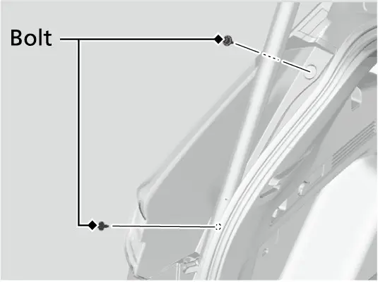
טוישן א הינטערשטן בלינקער לעמפל
- דרייט ארויס די באלטן וואס האלטן דעם טעיללייט.
- ציט פארזיכטיג דעם טעיללייט ביז די קנאפ-פינס קומען ארויס פון די גראמעטס (גומענע האלטערס) אינעם קערפער.
- ציט ארויס דעם ליכט-טייל פונעם הינטערשטן זייל.
- דרייט די סאקעט קעגן דעם זייגער און נעמט זי ארויס.
- נעמט ארויס דאס אלטע לעמפל און לייגט אריין א נייעם 21 W Amber WY21W לעמפל.
- לייגט צוריק די סאקעט, גלייכט אויס די פינס מיט די גראמעטס, און שטופט אריין ביז זיי זיצן אינגאנצן.
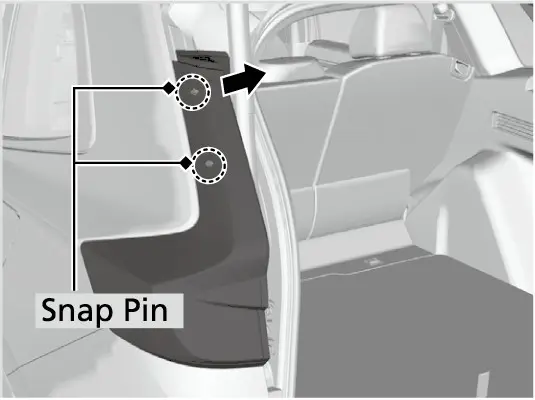
אויב דער טעילגעיט עפנט זיך נישט
אויב דער טעילגעיט וויל אמאל נישט עפענען, צום ביישפיל ווייל דער שלאס ארבעט נישט, גיט דער מאנואל א נויט-עפענונג פון אינעווייניג אינעם לאסט-פלאץ.
עפענען דעם טעילגעיט פון אינעווייניג
- מאכט זיכער אז עס איז דא גענוג פלאץ הינטער'ן קאר, כדי דער טעילגעיט זאל נישט טרעפן קיינעם אדער קיין זאך.
- ווילקלט איין א פלאכן שרויבנציער אין א טוך, כדי נישט צו קראצן.
- ניצט אים צו אראפנעמען דעם דעקל אינעווייניג אויפ'ן טעילגעיט.
- שטופט דעם טעילגעיט בשעת איר שטופט דעם לעווער רעכטס מיט'ן שרויבנציער.
- דערנאך פארבינדט זיך מיט א דילער צו טשעקן דעם קאר.
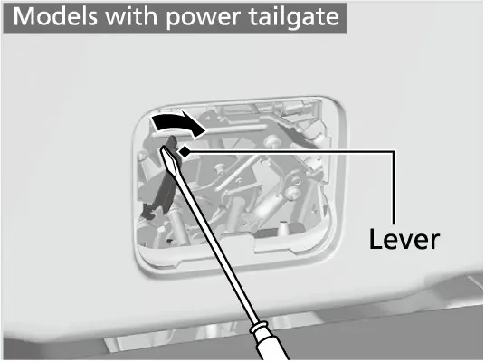
גאז טירל
Honda רעכנט אויס א push-to-release (דריקן צו עפענען) גאז טירל און א capless fuel filler (בענזין עפענונג אן א דעקל) אויפ'ן EX. דריקט דאס טירל צו עס אפצולאזן, דערנאך לייגט גלייך אריין דעם נאזל פון דער פאמפ. עס איז נישטא קיין דעקל אויפצודרייען, צו פארלירן, אדער לאזן פאלן אויף דער פארב. ווען איר ענדיגט, קנאקט צו דאס טירל. דאס אנפילן אליין ווערט ערקלערט אין קאפיטל 4.
דער מאנואל'ס קעפל רעדט פון אפשליסן דאס גאז טירל, וואס ווייזט אז עס קען בלייבן פארשלאסן ווען דער קאר איז פארשלאסן. אויב עס עפנט זיך נישט, איז דא א רעזערוו שנור. ווען איר ווייסט דערפון, קענט איר זיך ראטעווען פון שטעקן ביי דער פאמפ מיט א כמעט ליידיגן טאנק.
אויב איר קענט נישט אפשליסן דאס גאז טירל
- עפנט דעם טעילגעיט און נעמט אראפ דעם דעקל אינעם לאסט-פלאץ וואס די מאנואל צייכענונג ווייזט.
- ציט דעם שנור.
- עפנט דאס גאז טירל און פילט אן.
- דערנאך פארבינדט זיך מיט א דילער צו טשעקן דעם קאר.
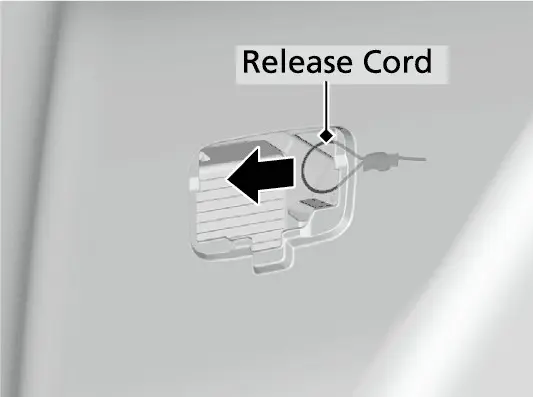
פאסאזשיר זייט
די פאסאזשיר זייט איז ווי א שפיגל פון דער דרייווער זייט: נאך א געהייצטער עלעקטרישער שפיגל מיט זיין LED בלינקער, פארנטיקע און הינטערשטע טירן, און דער זעלבער 18-אינטש אלוי ראד. דאס פארנטיקע פאסאזשיר פענצטער האט אויך auto up and down אויפ'ן EX. דאס פארנטיקע טיר האנטל האט די זעלבע Smart Entry מעגליכקייטן ווי ביים דרייווער, ווי באשריבן אינעם מאנואל'ס קאפיטל וועגן אריינגיין אן שליסל.
דער דאך
אייער EX האט א one-touch power moonroof with tilt (עלעקטרישער מונרוף מיט איין דרוק און אויפהייבן), סטאנדארט אויפ'ן EX און העכער לויט Honda'ס פיטשער גייד. איין דרוק עפנט אדער מאכט אים צו אינגאנצן, אזוי אז איר דארפט נישט האלטן דעם שאלטער, און ער קען זיך אויפהייבן הינטן פאר פרישע לופט. אן auto-reverse (אויטאמאטיש צוריקגיין) פונקציע ציט אים צוריק אויב ער טרעפט א ווידערשטאנד ביים צומאכן. אינעווייניג איז דא א רוקנדיגער זון-שירעם וואס מען רוקט מיט דער האנט פאר הייסע, העלע טעג. פון אינדרויסן, האלט די קאנטן פון גלאז און דעם גומע-ראנד ריין פון בלעטער און אייז. דער שאלטער ווערט ערקלערט אין קאפיטל 5.
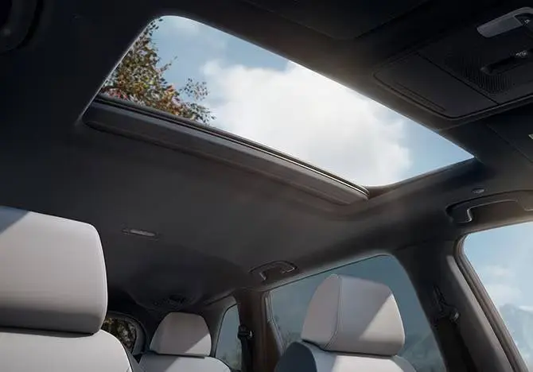
Honda'ס ספעציפיקאציע טאבעלע ווייזט שווארצע roof rails (דאך רעילס) נאר אויף די Sport, TrailSport, Sport-L און Sport Touring היברידס, נישט אויפ'ן EX, דערפאר איז אייער דאך גלאט פון פאבריק. Honda'ס אקסעסארי בילדער ווייזן דאך-ראקַס, לאסט קעסטלעך, בייסיקלען און קאיאקס, אבער דער גייד גייט נישט אריין אין די פרטים פון זיי אנשטעלן; פרעגט א דילער אויב איר דארפט עפעס.
אפטע פראגעס
פראגע: האט מיין EX פארקינג סענסארס וואס ביפן נעבן הינדערנישן?
ענטפער: ניין. Honda רעכנט אויס 4 פארנטיקע און 4 הינטערשטע פארקינג סענסארס נאר אויפ'ן EX-L און אויף די Sport-L און Sport Touring היברידס. ניצט די הינטערשטע קאמערע און קוקט אליין ארום.
פראגע: קען איך שטעלן א דעש קאם אדער א טאל טעג נעבן דעם רעאר-וויו שפיגל?
ענטפער: דער מאנואל זאגט קיינמאל נישט צוצולייגן זאכן צו דער ווינדשילד וואס קענען פארשטעלן וואס די פארנטיקע סענסאר קאמערע זעט. האלט דעם ארט פאר דער קאמערע פריי.
פראגע: מיין ווינדשילד האט א שפליטערל פאר דער קאמערע. קען איך מאכן א שנעלע רעזין פארעכטונג?
ענטפער: דער מאנואל ווארנט אז אפילו קליינע פארעכטונגען אינעם געביט וואס די קאמערע זעט, אדער אן אנדערע (נישט-Honda) ווינדשילד, קענען מאכן אז די סיסטעמען זאלן נישט ארבעטן נארמאל. Honda רעכנט אן אריגינעלע Honda ווינדשילד, און דערנאך זאל דער דילער נאכאמאל קאליברירן די קאמערע.
פראגע: וועלכע דרויסנדיגע לעמפלעך קען איך אליין טוישן?
ענטפער: נאר די הינטערשטע בלינקער לעמפלעך (21 W Amber, WY21W). אלע אנדערע דרויסנדיגע לייכטן זענען LED טיילן וואס א דילער טוישט.
פראגע: פארוואס זעען די שאטערס אינעם גריל אויס צוגעמאכט?
ענטפער: דער auto-shutter גריל מאכט זיך צו ווען מען דארף ווייניג קילונג, כדי צו פארמינערן ווינט-ווידערשטאנד, און עפנט זיך אויטאמאטיש ווען מען דארף מער קילע לופט. צוגעמאכטע שאטערס זענען נארמאל.
פראגע: דער טעילגעיט לאזט זיך נישט צומאכן און דער קאר ביפט. וואס איז די פראבלעם?
ענטפער: דער שליסל פאב איז מסתמא אינעם לאסט-פלאץ. דער טעילגעיט קען זיך נישט צומאכן ווען דער פאב איז דארט; נעמט אים ארויס און מאכט נאכאמאל צו.
הויפט פונקטן
- דער EX איז 184.8 in לאנג, 73.5 in ברייט, און 66.2 in (FWD) אדער 66.5 in (AWD) הויך.
- דער ראדאר איז הינטער'ן פארנטיקן Honda עמבלעם; האלט אים ריין און גאנץ.
- האלט דעם ארט פון דער ווינדשילד ביי דער קאמערע און דעם ליכט-סענסאר אויפ'ן דעשבארד אפגעדעקט.
- דער EX האט נישט קיין פארקינג סענסארס און נישט קיין דאך רעילס פון פאבריק.
- אלע דרויסנדיגע לייכטן זענען LED וואס דער דילער טוישט, חוץ די WY21W הינטערשטע בלינקער לעמפלעך.
- דער מאנועלער טעילגעיט עפנט זיך ווען דער פאב איז ביי אייך; עפנט אים אינגאנצן און לאזט קיינמאל נישט דעם פאב אינעם לאסט-פלאץ.
- עס זענען דא נויט-עפענונגען סיי פאר'ן טעילגעיט און סיי פאר'ן גאז טירל.
- ניצט דעם לייקע וואס קומט מיט'ן קאר, אפגעהיטן אינעם ספעיר-טייער לאך, ווען איר פילט אן פון א גאז קאן.